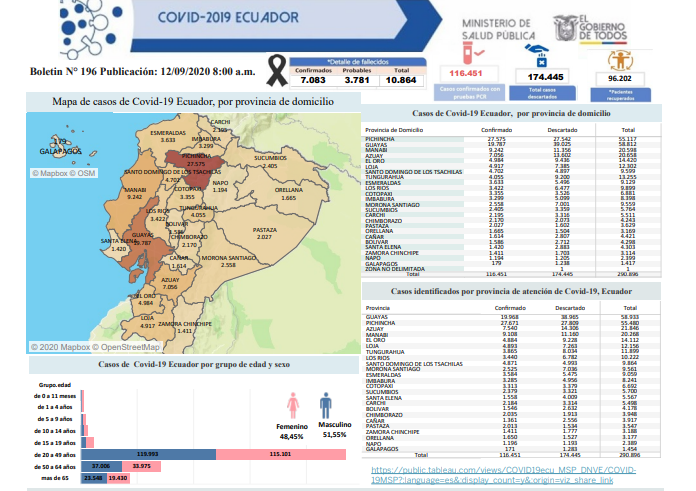
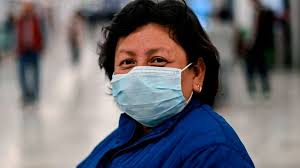
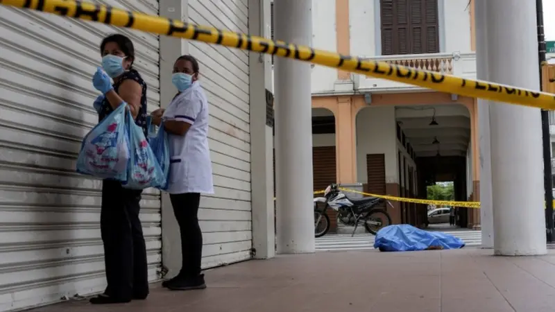

La COVID-19 es una enfermedad causada por el virus SARS-CoV-2, detectado por primera vez en diciembre de 2019 en la ciudad de Wuhan, China. El brote inicial fue identificado como una neumonía de causa desconocida que posteriormente se confirmó como un nuevo tipo de coronavirus. Debido a su rápida propagación internacional, la Organización Mundial de la Salud (OMS) declaró la enfermedad como pandemia el 11 de marzo de 2020.
En el Ecuador, el primer caso confirmado de COVID-19 fue anunciado oficialmente el 29 de febrero de 2020 por el Ministerio de Salud Pública. Se trató de una ciudadana ecuatoriana que había viajado desde España y presentó síntomas días después de su llegada al país. Este caso fue catalogado como importado, marcando el inicio de la presencia del virus en territorio ecuatoriano. Fuente: DW primer caso de coronavirus en Ecuador

El Gobierno de Ecuador confirmó este sábado (29.02.2020) su primer caso de coronavirus, en una persona mayor que llegó de España hace unos quince días y que se encuentra asilada en una unidad especial de cuidados intensivos de uno de los quince hospitales adecuados para atender esta enfermedad. La ministra de Salud, Catalina Andramuño, tras confirmar el caso en una rueda de prensa en Guayaquil, aseguró que se ha activado un plan nacional para proteger a la población ante esta enfermedad catalogada de "muy alto" riesgo de contagio por la Organización Mundial de la Salud (OMS). Andramuño explicó que la paciente, una persona adulta mayor que padece enfermedades preexistentes, "ha venido de España a Ecuador" y que en principio no presentó síntomas hasta que se detectó y confirmó la enfermedad, por lo que ha sido aislada en una unidad de terapia intensiva. Ecuador suspende actos masivos en 2 ciudades Quito suspendió la realización de actos masivos en las ciudades costeras de Babahoyo y Guayaquil, ambas en el suroeste del país, ante la detección en esa zona de un primer caso de coronavirus. La ministra de Gobierno (Interior), María Paula Romo, escribió en su cuenta de Twitter que, tras la confirmación del primer caso de COVID-19, se aplicarán varios protocolos sugeridos para este tipo de situaciones. De su lado, el presidente del país, Lenín Moreno, dijo que sigue de cerca el caso e hizo un llamamiento a la población a mantener la calma y a seguir las indicaciones de las instituciones encargadas de atender esta situación. ¿Que paso con la paciente cero de ecuador?

Tras la confirmación del primer caso, el número de contagios aumentó rápidamente, especialmente en la ciudad de Guayaquil, que se convirtió en uno de los primeros epicentros de la pandemia en América Latina. La emergencia sanitaria puso a prueba el sistema de salud y obligó al Gobierno a declarar el estado de excepción, restringir la movilidad y suspender actividades presenciales en todo el país. Fuente: BBC Mundo - Crisis del COVID-19 en Ecuador
La pandemia de la COVID-19 transformó profundamente la vida de los ecuatorianos desde la confirmación del primer caso el 29 de febrero de 2020. La rápida propagación del virus obligó a implementar confinamientos, restricciones de movilidad y suspensión de actividades presenciales, modificando de manera drástica la rutina diaria de millones de personas.
En el ámbito sanitario, el sistema de salud enfrentó una presión sin precedentes, especialmente en ciudades como Guayaquil, donde el aumento acelerado de contagios evidenció la necesidad de fortalecer la infraestructura hospitalaria. El uso de mascarillas, el distanciamiento social y las medidas de bioseguridad se convirtieron en parte de la vida cotidiana.
En el plano económico, numerosos negocios cerraron temporal o definitivamente, el desempleo aumentó y muchas familias vieron reducidos sus ingresos. Sectores como el turismo, el comercio y el transporte fueron de los más afectados, impulsando el teletrabajo y la digitalización como alternativas laborales.
La educación también cambió radicalmente, ya que las clases presenciales fueron reemplazadas por la modalidad virtual. Este proceso evidenció desigualdades en el acceso a internet y dispositivos electrónicos, obligando a docentes y estudiantes a adaptarse rápidamente a nuevas plataformas digitales.
En el ámbito social y emocional, la pandemia generó incertidumbre y estrés, pero también fortaleció la solidaridad y el reconocimiento hacia el personal sanitario. En conjunto, la COVID-19 marcó un antes y un después en la historia reciente del Ecuador, transformando hábitos, prioridades y formas de convivencia.